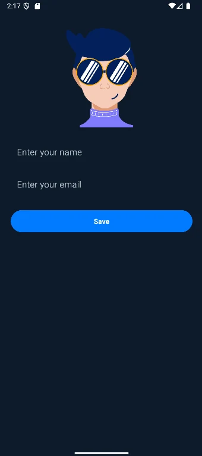
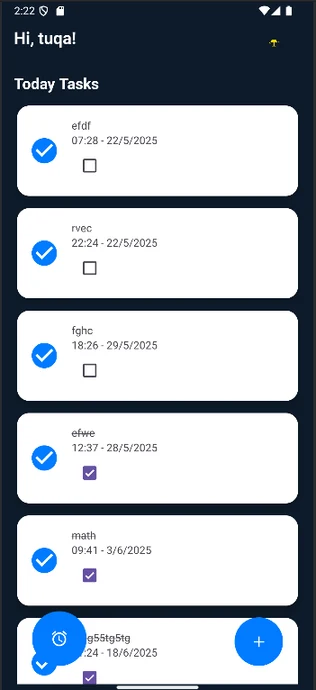
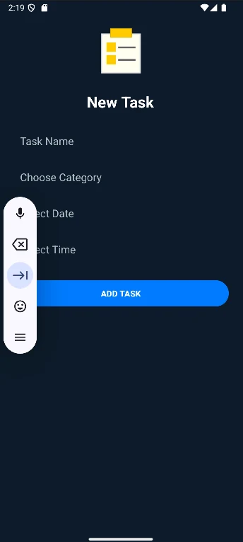
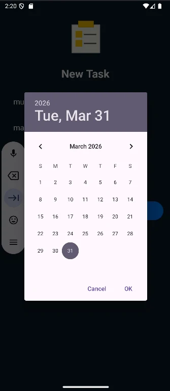
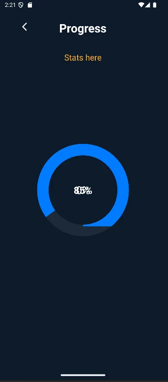
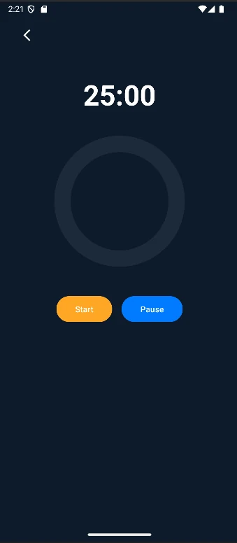

Learning & building
Alongside my creative work, I keep building my technical skills through real projects, from my graduation project to Android and web applications.
My main interest is in UI/UX and mobile app development, and I aim to create digital products that are both functional and visually clear.

Development projects
SCOPS
Smart Control of Paid System
A mobile application concept for managing subscriptions and recurring payments in one place. SCOPS helps users:
- Track subscriptions and recurring expenses
- Understand their subscription spending
- Get reminders about upcoming renewals
- Avoid unwanted recurring payments
StudyPal
Smart Study Companion
An Android productivity app that helps students organize academic tasks, manage study sessions, and track their progress. Built with Java in Android Studio.
I built StudyPal as a course project during my second year at university, while I was still learning Android development. It is a learning project, and this is the version I finished with.
- Create and manage tasks
- Assign dates and times to tasks
- Track task completion
- Daily progress visualization
- Pomodoro focus timer
- 25-minute focus sessions & short breaks






Skill Exchange Web App
A web application that allows users to exchange skills through interactive sessions. The platform is designed to connect people who want to learn and teach different skills in a simple and accessible way. Built as a team project.
This project helped me understand how frontend systems are structured, and strengthened my interest in UI/UX and interactive web applications.
- Built using React.js with a component-based structure
- Responsive design using Tailwind CSS
- Simulates real user interactions (login, sessions, user profiles)
- Works across desktop and mobile browsers
Professional web work
Araak Dental Center Website
An ongoing website development project for Araak Dental Center, focused on creating an engaging digital presence, presenting the clinic's services, and improving the online user experience.
- UI/UX design
- Mobile app development
- Clean and modern interfaces
- Creative digital experiences
- Flutter and mobile app structure
- UI/UX design in Figma
- Frontend development
- Project organization